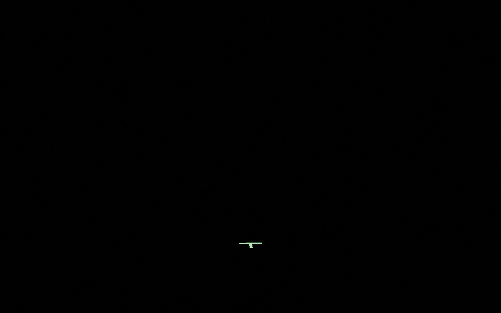
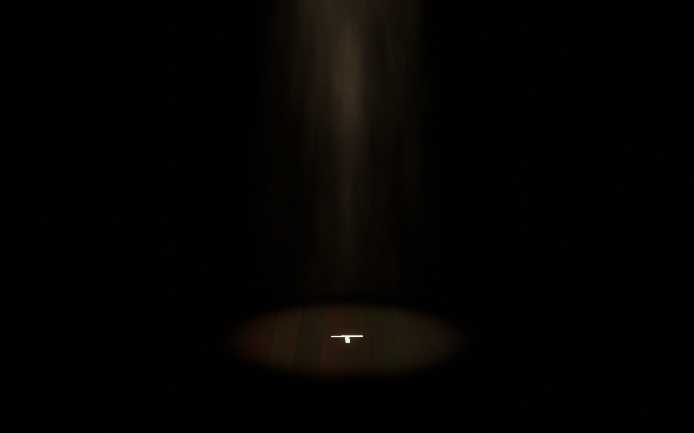

硝子の庭
灯守座 第24回公演・作・演出 朝霧 遼
伊織主演


HIIRAGI TORU — STAGE ACTOR
PROFILE
小劇場から始めて12年。台詞の少ない役ほど、立ち方と間で語ってきました。2024年からは映像とオーディオドラマにも。
WORKS
灯守座 第24回公演・作・演出 朝霧 遼
伊織主演
星屑通り製作委員会・ミュージカル
古書店の店主出演
劇団 北緯三十五度・二人芝居
兄主演
オーディオドラマ・全6話
月売り声の出演
PRESS
掲載にお使いください。文字数ごとに3種類あります。
舞台俳優。小劇場を中心に12年、38作品に出演。台詞の少ない役で、立ち方と間の芝居に定評がある。
舞台俳優。小劇場を中心に12年、38作品に出演し、主演は7作。台詞の少ない役で、立ち方と間の芝居に定評がある。2024年からは映像とオーディオドラマにも活動を広げている。特技は殺陣と津軽三味線。
柊木 透（ひいらぎ とおる）
所属なし・本人に直接ご連絡ください
写真の使用は、ご連絡のうえ高解像度版をお送りします
REEL